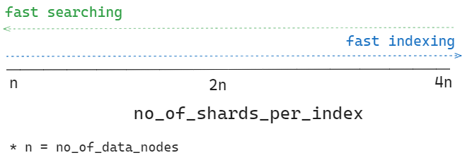

Ideally shard sizes should be between 10–50 GB, the calculations are done based on desired shard size selection.
Shard size impacts both search latency and write performance, too many small shards will exhaust the memory (JVM Heap), and too few large shards prevent OpenSearch from properly distributing requests.
There is a limit on how many shards a node can handle, it’s useful to check how many shards a node can accommodate and search, by inspecting cluster settings documentation.
cluster.max_shards_per_node setting limits the total number of primary and replica shards for the cluster, default is 1000

🟢 Green: all primary shards and their replicas are allocated to nodes
🟡 Yellow: all primary shards are allocated to nodes, but some replicas aren’t.
🔴 Red: at least one primary shard and its replicas are not allocated to any node
📌Unassigned shards cannot be deleted, an unassigned shard is not a corrupted shard, but a missing replica.